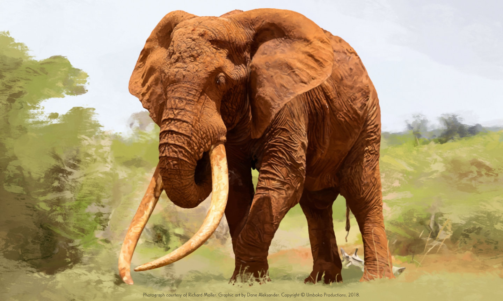

Satao, “Bull drinking” (2014), photograph courtesy of Mark Deeble [markdeeble.com, desaturated]
September 2014
Elephant Conservation in Africa
Press secretary at Animat Habitat.
On June 15th, wildlife filmmaker Mark Deeble submitted a final chapter for the story of Satao—a legend. Thanks to Mark for sharing his account of the life and death of this magnificent bull elephant. Let the story of Satao be a chapter we learn from. And let this change the way we look at wildlife.
Looking at Satao from a distance—from the north and an ocean away, it is unfair to place a value on such a loss for Kenya or Tanzania and, more generally, on such widespread biodiversity loss across Africa, without also addressing the impact of pollutants emitted and resources extracted by developed nations around the world. This article points to Satao as an ambassador for the poaching crisis facing elephants and elephant conservationists in Africa, as well as to the ways people around the world can make a change from home.
Change in Africa
Today, elephants in the wild in Africa are in a constant battle for survival. Fewer than four hundred thousand remain. Ivory poaching – where elephants are killed for their tusks – has increased at an alarming rate with the emergence of an affluent middle class in China. Half of the African elephant population has been lost in the last thirty-five years. One hundred thousand elephants have been poached in the last three years alone. An average of one hundred elephants are killed for their tusks every day, so it is not hard to see where this story goes if we do not change something, somewhere, soon.
“Nature is beautiful, and artists who paint and photograph nature celebrate its gorgeous wonders. Nature, however, has its dark side: suffering and dying are part of reality for all living things. But the rate and degree of this in nature have been augmented by man’s actions, causing an alarming depletion of ecosystems and endangering the survival of entire species. ”
— Robert Bateman, New Works (2010), Artist's Statement, Greystone Books

Satao, “Dead and splayed” (2014), photograph courtesy of Mark Deeble [markdeeble.com, desaturated]
Satao was one of a few remaining ‘magnificent tuskers’. The Tsavo bull roamed the grasslands of Kenya and Tanzania for forty-six years. He was killed for his ivory in his home, in his prime, in late May 2014.
Lust for ivory must end. People in developed nations can help by simply reconsidering what holds value in their lives. No example is more poignant than the seemingly archaic market for ivory trinkets. The people in African nations who take part in the poaching of more than thirty-thousand elephants each year forgo long-term ecological and communal benefits in exchange for a short-term gain to the benefit of a small group of criminals. And the lion's share of any profit leaves Africa in the hands of transnational criminal syndicates.
Illegal trade in ivory and ivory poaching persists because somewhere there is a market. When the buying stops, the killing will too. So it goes. Instead of such unworthy artifacts as ivory for hanko or high-status symbols, we can all uphold such worthy icons of Africa by helping to safeguard our wild world with elephants.
More about a timeline of the ivory trade: A History of Elephant Conservation.
Change at Home
Pressure on natural habitats is fueling extreme climates and species loss… And species loss is forever. Agricultural and technological developments are creating a global network of people that are more aware of, and more accountable for, the fragile state of the planet. Now, more than ever.
It is clear that recent human history has imposed an imbalance in the bioregions on Earth. And it is inconceivable we stand by while entire ecosystems collapse around us, knowing some of the most magnificent animals out there are far from safe, and knowing our generation will be the last to share a world with a vast number of them in the wild. Where do the wild things go—where will there still be space for elephants in the next decades and into the next century? Imagine the wild places and the animals that live in them only existing in picture books for the children of our children and so on.

Last of the Big Tuskers elephant graphic: “Satao” (2018) [bigtuskers.com]
Change starts at home… It is in our power to encourage sustainable practices in our own communities, to live more resourcefully on an individual basis, and to minimize collective human emissions into the environment on a local scale. As we focus on making the best, and not simply the most, of the land we hold now, we can take the next steps together to sustain life in the wild for the generations to come.
We can help by not continuing to uphold a system that chooses short-term, clear-cut-and-run profits over sustainable harvests. We can help by recognizing the damage caused by excessive and wasteful consumption. We can help by leaving some habitats as wilderness. We need to protect our forests and jungles and waterways. Earth needs to have ecosystems that exist apart from industry and away from the cities that have been raised on the natural resources that surround them.
We can help by working to sustain natural ecosystems at home. We can make our cities less emissive. Less extractive. We can make demands of our industries to be less of a pollutant of air, land and water, and less destructive of nature. We can make better use of all resources. We can make an effort to be less wasteful. We can start by striving to make our hometown more sustainable. This is a way that cities – and we the people in them – can find balance with the natural systems of our bioregion.
And by saving the wild places on Earth, people stand to benefit immeasurably.
It is in this balance that the planet has, so far, sustained human life with clean air and fresh water and good harvests. The more we are aware of what we have – and of the value of what we have – both in terms of community and economy, the more we are going to be aware of what nature needs from us and the better we can take care of what we have already taken. And we now better understand how our actions today can change the chances of a future for elephants.
Change the Way We Look at Elephants
Large, migratory land mammals still have room to roam in Africa. African savanna elephants, while not unique as a great migratory species, are uniquely large land mammals capable of roaming across larger spaces than most. A critical challenge for the future of elephants in Africa is habitat fragmentation. This is a human problem that has a human solution. The challenge, where possible, is to limit, manage and return to nature any land development in the wild places that remain or in the wildlife corridors that connect them. Then, to preserve and protect those vestiges of wilderness for the benefit of local people, the elephants and the planet.

African elephant distribution map based on data from the African Elephant Status Report, 2007, reproduced under the CC BY-SA 3.0 license. [africanelephantdatabase.org, cropped, recolored]
Tourism is an economic driver for many African nations with wildlife, in particular those with wild elephants. There is an imperative for tourism-based sectors to maximize contribution to local communities and minimize impact on the land. While tourists share in the responsibility to travel in an ecological and environmentally economical way, travel companies will remain an intermediary between international travelers and many of the wildlife parks and reserves. And it remains the responsibility of these travel companies to make sure that overcrowding is not degrading the natural environment nor disrupting the wildlife in an area.
The wildlife tourism industry in Africa is big business, but all business is dependent on its clientele. Individual actions can make a collective difference, indicating that travelers will only support ethical, sustainable wildlife tourism. When sustainable use of the wild places and ethical treatment of the animals that live in them is made a priority by a big enough collective of individual tourists, the wildlife tourism industry will change for the better.
When going on a safari, learn where your funds go and leave only footprints. Look for companies that promote places where wildlife appears to live in an appropriate habitat with access to shelter, space and water at all times. Look for experiences that offer observation of animals engaging in natural behaviors in natural environments. Look for programs that promote indigenous guides with local, ecological knowledge of the lands and the waters and their stories. And look to visit national parks and protected areas that are managed by a reliable and ethical operator, where the money you spend will support park officials and local communities who steward those wild places.
Africa is at a crossroads, on the brink of possibilities. Therein – in the nature conservancies, in the national parks, and in the corridors in-between – is hope for African wildlife. There is still time to make a difference.
+ Protected Habitats in Africa
The following are protected habitats in a number of elephant-range states in Africa, including in the Republic of Kenya to the east and republics in the Southern African Development Community (SADC) to the south. [1]
Eastern Africa
- Bwindi Impenetrable National Park UG
- Kenya Lake System in the Great Rift Valley KE
- Kilimanjaro National Park TZ
- Lake Malawi National Park MW
- Lake Turkana National Parks KE
- Mount Kenya National Park and Natural Forest KE
- Ngorongoro Conservation Area TZ
- Rwenzori Mountains National Park UG
- Serengeti National Park TZ
- Tsavo National Parks and Chyulu Hills Complex KE
+ Kenya
- Aberdare National Park
- Amboseli National Park
- Arabuko Sokoke National Park
- Boni National Reserve
- Dodori National Reserve
- Hell's Gate National Park
- Kisite-Mpunguti Marine National Park
- Kisumu Impala Sanctuary
- Kiunga Marine National Reserve
- Lake Bogoria National Reserve
- Malindi Marine National Park
- Meru National Park
- Mount Elgon National Park
- Mount Longonot National Park
- Mwea National Reserve
- Nairobi National Park
- Ol Donyo Sabuk
- Rimoi National Reserve
- Ruma National Park
- Saiwa Swamp National Park
- Shimba Hills National Reserve
- Watamu Marine National Park
More habitats protected by Kenya Wildlife Service.
More habitats in Kenya.
+ Malawi
- Lengwe National Park
- Nyika National Park
More habitats protected by Department of National Parks, Malawi.
- Banhine National Park
- Bazaruto National Park
- Gorgongose National Park
- Limpopo National Park
- Mágoè National Park
- Quirimbas National Park
- Zinave National Park
- Chimanimani National Reserve
- Maputo Special Reserve
- Niassa National Reserve
More habitats protected by Adminstração Nacional das Áreas de Conservação, Mozambique.
+ Tanzania
- Arusha National Park
- Gombe Stream National Park
- Jozani Chwaka Bay National Park
- Katavi National Park
- Kitulo National Park
- Lake Manyara National Park
- Mahale Mountains National Park
- Mikumi National Park
- Mkomazi National Park
- Ruaha National Park
- Rubondo Island National Park
- Saadani National Park
- Saanane Island National Park
- Tarangire National Park
- Udzungwa Mountains National Park
More habitats protected by Tanzania National Parks Authority.
+ Uganda
- Katonga Wildlife Reserve
- Kibale National Park
- Kidepo Valley National Park
- Lake Mburo National Park
- Lake Mburo–Nakivali Wetland System
- Mgahinga Gorilla National Park
- Mount Elgon National Park
- Murchison Falls National Park
- Otze Forest Wildlife Sanctuary
- Queen Elizabeth National Park
- Semuliki National Park
More habitats protected by Uganda Wildlife Authority.
Southern Africa
- iSimangaliso Wetland Park SA
- Maloti-Drakensberg Park LS, SA
- Mana Pools National Park ZW
- Mapungubwe Cultural Landscape SA
- Mosi-oa-Tunya – Victoria Falls ZM, ZW
- Okavango Delta AO, BW, NM
- Torra Conservancy near Twyfelfontein NM
+ Angola
- Bicuari National Park
- Cangandala National Park
- Iona National Park
- Longa-Mavinga National Park
- Luengue-Luiana National Park
- Quiçama National Park
More habitats by National Institute of Biodiversity and Conservation Areas, Angola.
+ Botswana
- Chobe National Park
- Kgalagadi Transfrontier Park
- Makgadikgadi Pan
- Nxai Pan National Park
More habitats protected by Department of Wildlife and National Parks, Botswana.
+ Eswatini
- Hawane Nature Reserve
- Malolotja National Park
- Mlawula Nature Reserve
More habitats protected by Eswatini National Trust Commission.
+ Namibia
- Bwabwata National Park
- Dorob National Park
- Etosha National Park
- Khaudum National Park
- Mangetti National Park
- Mudumu National Park
- Namib-Naukluft National Park
- Nkasa Rupara National Park
- Skeleton Coast National Park
- Waterberg Plateau Park
More habitats protected by Ministry of Environment and Tourism, Namibia.
- Addo Elephant National Park
- Agulhas National Park
- Augrabies Falls National Park
- Bontebok National Park
- Camdeboo National Park
- Garden Route National Park
- Golden Gate Highlands National Park
- Karoo National Park
- Kruger National Park
- Mapungubwe National Park
- Marakele National Park
- Mokala National Park
- Mountain Zebra National Park
- Namaqua National Park
- Richtersveld Transfrontier Park
- Table Mountain National Park
- Tankwa Karoo National Park
- West Coast National Park
More habitats protected by South African National Parks.
More habitats in South Africa.
+ Zambia
- Blue Lagoon National Park
- Kafue National Park
- Lavushi Manda National Park
- Lochinvar National Park
- Lower Zambezi National Park
- Luambe National Park
- Lusaka National Park
- Lusenga Plain National Park
- Mweru Wantipa National Park
- North Luangwa National Park
- Nsumbu National Park
- Sioma Ngwezi National Park
- South Luangwa National Park
- West Luangwa National Park
More habitats protected by Ministry of Tourism, Zambia.
+ Zimbabwe
- Chizarira National Park
- Gonarezhou National Park
- Hwange National Park
- Kazuma Pan National Park
- Matobo National Park
- Matusadonha National Park
- Nyanga National Park
- Zambezi National Park
More habitats protected by Zimbabwe Parks and Wildlife Management Authority.
More habitats in Angola, Botswana, Namibia, Zambia, Zimbabwe.
1 The Union of Comoros and republics of Madagascar, Mauritius, Seychelles are part of SADC but the islands are unique habitats and unlisted. The republics of Congo and Gabon are also part of SADC but are isolated forests to the northwest and, as of yet, unlisted. The republics of Malawi, Mozambique, Uganda and the United Republic of Tanzania are listed in East Africa.
2 Kavango-Zambezi Transfrontier Conservation Area (KAZA TFCA) is an agreement signed by Angola, Botswana, Namibia, Zambia and Zimbabwe, binding these countries to create a transfrontier park straddling their national borders.
Close: Protected Habitats in Africa
Research in remaining natural strongholds, in particular the grasslands to the east and the delta and the desert to the south, suggests actionable and collective solutions are possible. We can come together in support of conservationists working with and within rural African communities to sustain and protect local ways of life alongside the natural habitats and migratory routes that remain for elephants. In the lead up to the release of White Elephant—a comic book and a companion app, Animat Habitat aims to promote the work of select wildlife foundations, funds, organizations and trusts that create positive change in Africa for this iconic species.
March 2019—Animat Habitat has recognized select wildlife conservation foundations and funds making a difference for elephants and the people living alongside them in Africa.
Conservation in Eastern Africa
- Amboseli Trust for Elephants, Kenya
- Big Life Foundation, Kenya
- Lewa Wildlife Conservancy, Kenya
- Mount Kenya Trust, Kenya
- Reteti Elephant Sanctuary, Kenya
- Sheldrick Wildlife Trust, Kenya
- Tsavo Trust, Kenya
Conservation in Southern Africa
- Elephant-Human Relations Aid, Namibia
- Elephants Without Borders, Botswana
- Okavango Wilderness Project, Angola, Botswana
- The Zambezi Society, Zimbabwe